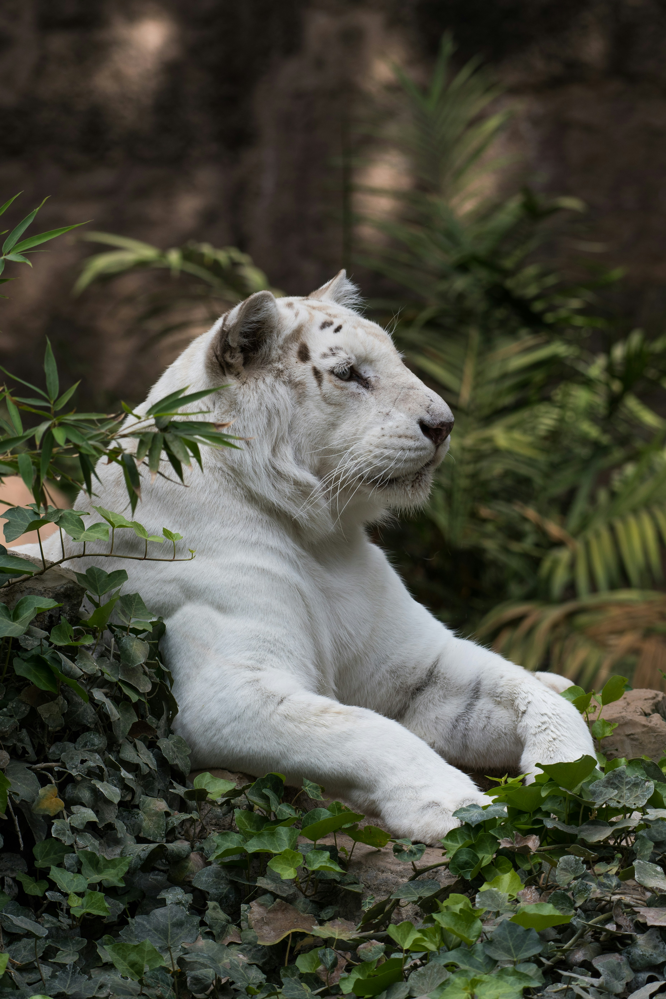
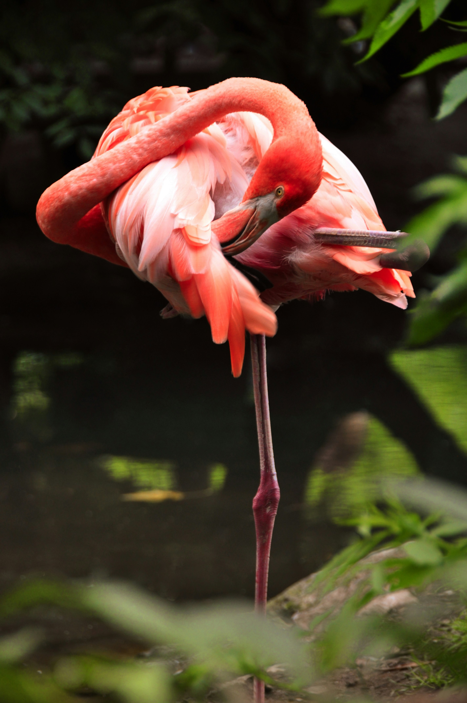
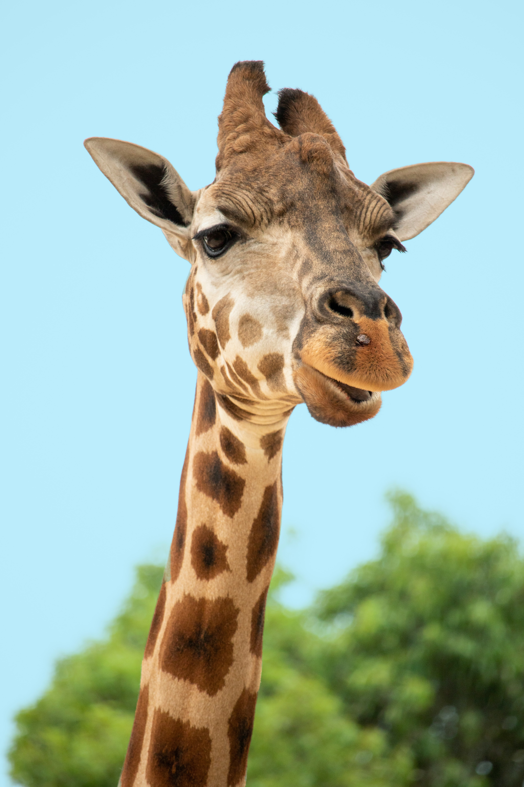
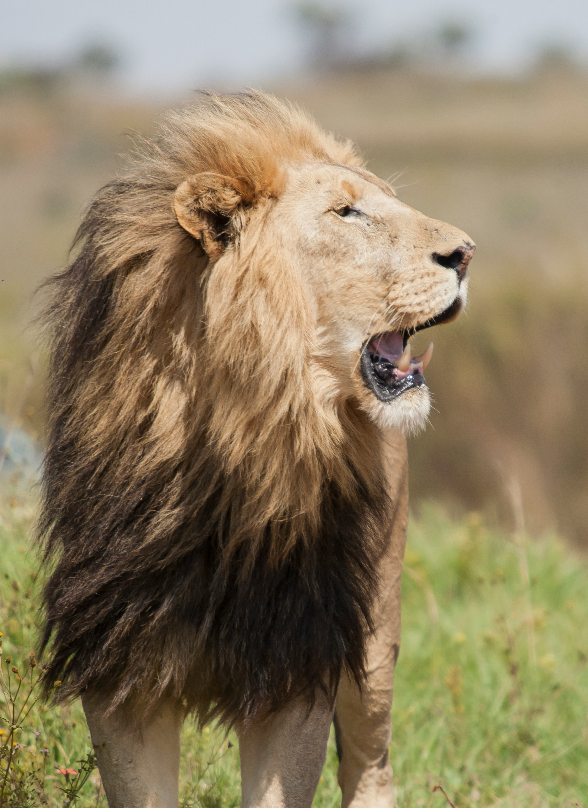
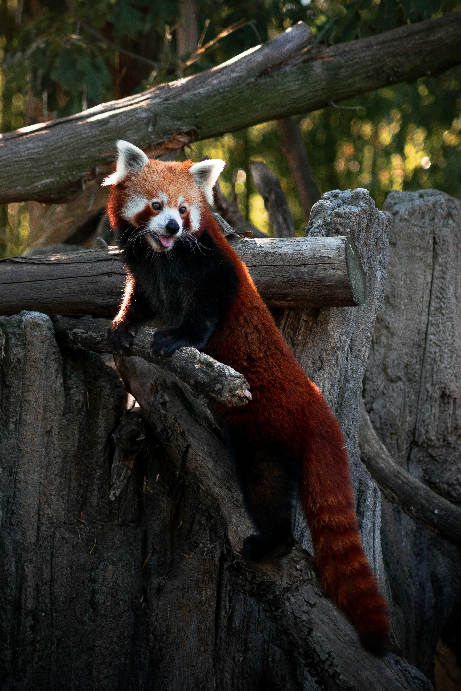

Learn more about our animals!
| Picture | Name | Scientific Name | Description | Credits |
|---|---|---|---|---|
 |
White tiger | Pantheria tigris tigris |
white tiger, colour variant of the Bengal tiger (Pantheria tigris tigris), the Siberian tiger (P. tigris altaica), or a hybrid between the two subspecies that is characterized by white fur, dark brown or black stripes, and blue eyes. This rare colour mutation, called leucism, which also occurs in many other animals, appears in perhaps one in 10,000 tigers in the wild. The mutation results from the mating of two tigers that carry the recessive allele that produces white fur in their offspring. More specifically, it stems from the substitution of a single amino acid in a single transporter protein that greatly reduces the production of one of the major types of the pigment melanin, called pheomelanin, which produces the reds, oranges, and yellows that appear in a tiger’s fur. White tigers do, however, possess eumelanin, the pigment that colours the tiger’s eyes and the hairs of its stripes. Leucism differs from albinism in that the latter is caused by a complete absence of melanin. |
|
 |
Flamingo | Phoenicopteriformes |
flamingo, (order Phoenicopteriformes), any of six species of tall, pink wading birds with thick downturned bills. Flamingos have slender legs, long, graceful necks, large wings, and short tails. They range from about 90 to 150 cm (3 to 5 feet) tall. Flamingos are highly gregarious birds. Flocks numbering in the hundreds may be seen in long, curving flight formations and in wading groups along the shore. On some of East Africa’s large lakes, more than a million lesser flamingos (Phoeniconaias minor) gather during the breeding season. In flight, flamingos present a striking and beautiful sight, with legs and neck stretched out straight, looking like white and rosy crosses with black arms. No less interesting is the flock at rest, with their long necks twisted or coiled upon the body in any conceivable position. Flamingos are often seen standing on one leg. Various reasons for this habit have been suggested, such as regulation of body temperature, conservation of energy, or merely to dry out the legs. |
|
 |
Giraffe | Giraffa |
giraffe, (genus Giraffa), any of four species in the genus Giraffa of long-necked cud-chewing hoofed mammals of Africa, with long legs and a coat pattern of irregular brown patches on a light background. Giraffes are the tallest of all land animals; males (bulls) may exceed 5.5 metres (18 feet) in height, and the tallest females (cows) are about 4.5 metres. Using prehensile tongues almost half a metre long, they are able to browse foliage almost six metres from the ground. Giraffes are a common sight in grasslands and open woodlands in East Africa, where they can be seen in reserves such as Tanzania’s Serengeti National Park and Kenya’s Amboseli National Park. The genus Giraffa is made up of the northern giraffe (G. camelopardalis), the southern giraffe (G. giraffa), the Masai giraffe (G. tippelskirchi), and the reticulated giraffe (G. reticulata). |
|
 |
Lion | Panthera leo |
lion, (Panthera leo), large, powerfully built cat (family Felidae) that is second in size only to the tiger; it is a famous apex predator (meaning without a natural predator or enemy). The proverbial “king of beasts,” the lion has been one of the best-known wild animals since earliest times. Lions are most active at night and live in a variety of habitats but prefer grassland, savanna, dense scrub, and open woodland. Historically, they ranged across much of Europe, Asia, and Africa, but now they are found mainly in parts of Africa south of the Sahara. An isolated population of about between 500 and 700 wild Asiatic lions constitute a slightly smaller population that lives under strict protection in India’s Gir National Park and Wildlife Sanctuary. |
|
 |
Red Panda | Ailurus fulgens |
red panda, (Ailurus fulgens), reddish brown, long-tailed, raccoonlike mammal, about the size of a large domestic cat, that is found in the mountain forests of the Himalayas and adjacent areas of eastern Asia and subsists mainly on bamboo and other vegetation, fruits, and insects. Once classified as a relative of the giant panda, it is now usually classified as the sole member of the family Ailuridae. |
|

|
Lizard | Sauria |
lizard, (suborder Sauria), any of more than 5,500 species of reptiles belonging in the order Squamata (which also includes snakes, suborder Serpentes). Lizards are scaly-skinned reptiles that are usually distinguished from snakes by the possession of legs, movable eyelids, and external ear openings. However, some traditional (that is, non-snake) lizards lack one or more of these features. For example, limb degeneration and loss has occurred in glass lizards (Ophisaurus) and other lizard groups. Movable eyelids have been lost in some geckos, skinks, and night lizards. External ear openings have disappeared in some species in the genera Holbrookia and Cophosaurus. Most of the living species of lizards inhabit warm regions, but some are found near the Arctic Circle in Eurasia and others range to the southern tip of South America. |